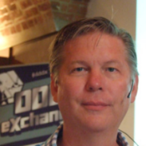
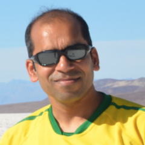

<header>
  <ul class="comment-block">
    <li><span class="orange">Sprekers</span></li>
    <li></li>
    <li>Internationale top sprekers bij Code & Comedy.</li>
    <li>Laat je inspirerendoor experts uit binnen- en buitenland.</li>
    <li>Dit jaar heeft & Comedy een geweldige line-up voor je in petto!</li>
    <li></li>
  </ul>

  <ul class="comment-block speaker-header">
    <li>
      
      <span class="orange">Vaughn Vernon</span>
      <a class="no-hover" href="https://www.linkedin.com/in/vaughnvernon" target="_blank">
        
      </a>
    </li>
    <li>Vaughn Vernon is een software craftsman en thought leader</li>
    <li>betreft het vereenvoudigen van software design en implementatie.</li>
    <li>Sinds 1980 programmeert hij object georiënteerde talen.</li>
    <li>Verder houdt hij zich vanaf begin jaren ’90 zich bezig met het toepassen</li>
    <li>van de principes van Domain Driven Design en Smalltalk domein modelering.</li>
    <li>Vaughn Vernon adviseert en spreekt internationaal en geeft les in</li>
    <li>Domain Driven Design over de gehele wereld.</li>
    <li></li>
    <li>Vaughn Vernon is een ervaren docent en spreker,</li>
    <li>doceert zijn IDDDWorkshop (.com) wereldwijd,</li>
    <li>en hij heeft gepresenteerd op conferenties als:</li>
    <li>ScalaDays (NYC & Berlijn), DDD eXchange (London & NYC),</li>
    <li>DDD Europa (2016), Øredev (Zweden), Booster Conf (Noorwegen),</li>
    <li>Software Architecture Summit (Berlijn), SpringOne 2GX, QCon SF,</li>
    <li>UberConf, CodeStock, PulsoConf (Bogota, Colombia), IASA ITARC, Microsoft TechEd.</li>
    <li></li>
  </ul>

  <ul class="comment-block speaker-header">
    <li>
      
      <span class="orange">Arun Gupta</span>
      <a class="no-hover" href="https://twitter.com/arungupta" target="_blank">
        
      </a>
    </li>
    <li>Arun Gupta is de vice-president van ontwikkelaar belangenbehartiging</li>
    <li>bij Couchbase. Hij bouwt diverse developer communities</li>
    <li>voor meer dan 10 + jaar bij Sun, Oracle en Red Hat.</li>
    <li>Hij heeft een grote expertise in het leiden van cross-functionele</li>
    <li>teams met betrekking tot het ontwikkelen en uitvoeren van strategie, </li>
    <li>planning en uitvoering van de inhoud, marketing campagnes en programma's.</li>
    <li>Voorafgaand aan dat leidde hij engineering teams bij Sun.</li>
    <li>Verder is Arun Gupta is een van de oprichters van het Java EE team.</li>
    <li>En is hij auteur van meer dan 2.000 blog posts welke gaan over</li>
    <li>de technologie. Hij is een zeer ervaren spreken.</li>
    <li>Hij heeft gepresenteerd in meer dan 40 landen over talloze onderwerpen</li>
    <li>en is een JavaOne Rock Star. Gupta is ook oprichter</li>
    <li>van het hoofdstuk Devoxx4Kids in de VS en blijft technologie</li>
    <li>onderwijs onder kinderen stimuleren.</li>
    <li>Een auteur van een best-selling boek, een fervent hardloper,</li>
    <li>een globetrotter, een Java-kampioen, een JUG leider, je kunt hem bereiken @arungupta</li>
    <li></li>
  </ul>
</header>
